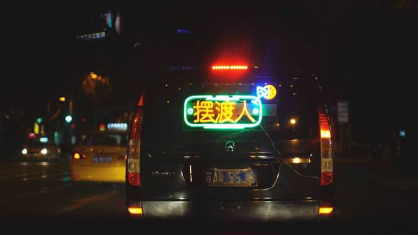
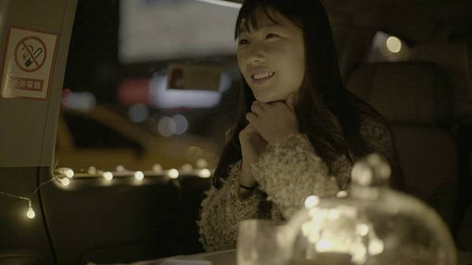
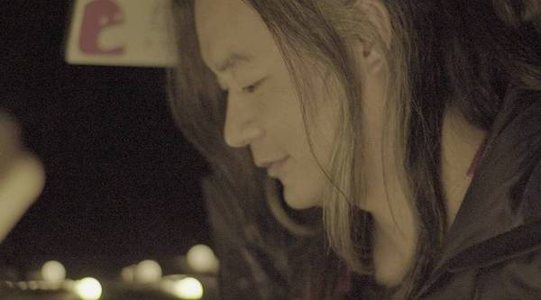
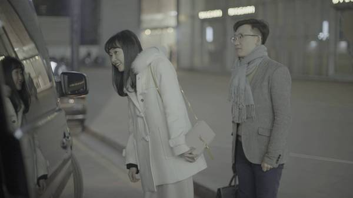
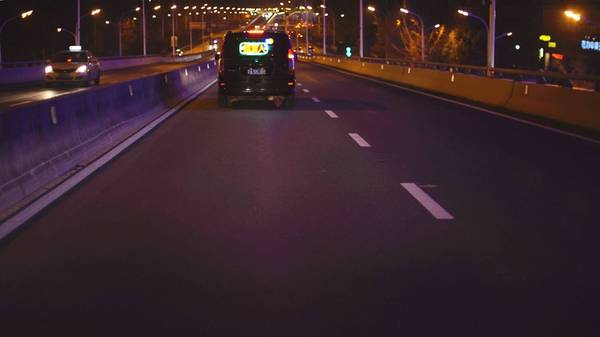
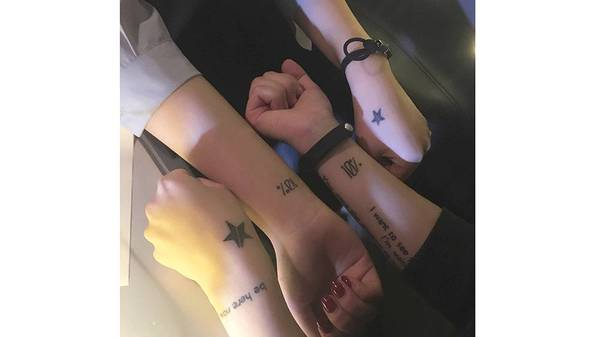
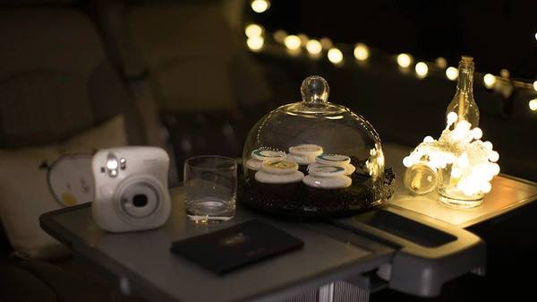
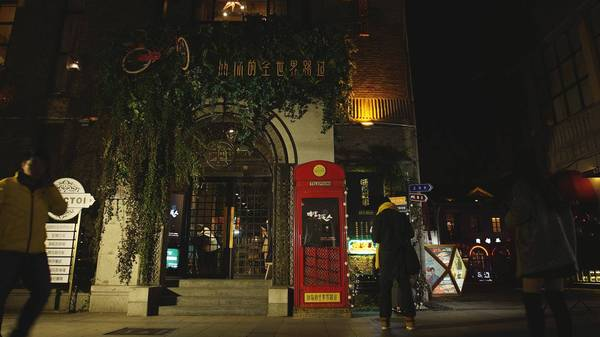

全世界只有不到 2 % 的人关注了我
你真是个特别的人
酒馆，永远不乏有趣的事儿发生。
怀着对酒精的幻想，有人想来这里买醉，有人想来这里重生。
11 月 28 日晚，我邀请西门大嫂和银教授，与我同一时间在南京、北京、上海三地发车。各自乘着一辆“移动小酒馆”，试图在三座城市中，摆渡一些困惑于情感的人。
这是我近两年来，首次不在22:22左右推送。之所以选择于8:25同时按下后台发送键，是希望今夜过后，我们生命里不再出现读起来像“不爱我”的字眼。
如当晚文字推送中所写，我们会在三座城市，分别停靠四站。
只要有人抵达站点并轻敲车门，我们便会邀TA上车。
我同大嫂和银教授一样，都对这个夜晚充满期待。我们不知道什么样的人会来敲车门，也不知道今晚会收获怎样的故事。
黑夜与酒精，总是在有意放大荷尔蒙的力量。

南 京
摆渡人：胡辛束
按下发送键后，我就打开红豆Live开始了本次活动的全程语音直播。
对我而言，等候第一位乘客上车的这段是时间非常重要的。我需要向直播中的每一位听众解释 “摆渡人” 的含义。
相信你的生活里一定出现过痛苦到难以度过的时刻，像是突如而来的一场大雾中迷失了方向。在那样一个时刻里，一定有过一个人，给过你拥抱和痛聊，把你拉出困境，让你忘记神之手的捉弄。这样的人，我们称之为“摆渡人”。
我在直播中重复了好几次这段话，与其说是前情扼要，倒不如说是在给自己信心，希望今晚自己能担任好这个角色。
21:00 南京1912街区
南京站“移动小酒馆”准时停靠在南京1912街区。
车刚刚停稳，就有一位女孩敲了车门，准时得意外。
我本以为第一位上车的乘客会是刚刚痛失爱情的女孩子。然而姑娘上车之后，右手无名指的婚戒瞬间扼杀了我的猜测。

她叫燕儿，今年大四，在南京某所医院的心脏科室实习，和男朋友在一起4年了，不久后就会订婚。
“你生命中的摆渡人是谁呢？”
“我男朋友吧，他是我的初恋。”
就像所有美好的爱情故事一样，两人相识相爱相知，顺其自然。
和我对话的全程，燕儿一直在笑。
我想，如果笑容能和婚礼上的捧花一样传递幸福，那当天晚上我一定收获了很多。

情理之中却意料之外，张嘉佳在第二站上车了。
车停靠在路边的时候，与他一起上车的还有两位热情的粉丝。她们是特地从合肥来看他今天的高校对谈的，在微博上看到了这场活动，准备碰碰运气。于是第二站，我接上了三个人。
那天的聊天过程中非常有趣，张导对我说了不下三遍“二十多岁的时候应该更任性一点”。当天详细的故事，我已经写在前天的文章里了：张嘉佳丨马力是我30岁以前，陈末是我30岁之后。
建议二十多岁的你，一定要读一读。
现实中的张嘉佳，头发灰白齐肩，言谈间像是一位深情的“老顽童”。
车缓慢停靠在第三站，临走前，张导对我说有空一起吃螃蟹。我心想，两位巨蟹座齐心协力啃螃蟹的画面，也是挺可爱的。
22:30 德基广场
张导刚刚下车，就有一位情侣敲了车门。
他们在德基看完电影，正巧一下楼就看到了我们的车。

他俩上车之后，我最大的感受就是造孽啊，又要被秀恩爱了。明明不是我来摆渡情感落水者的吗，怎么每一站我都成了急需拯救的单身病患？真是苦情。
这对情侣相爱6年，最大的争吵是因为一支可爱多。
回想两个人刚刚在一起的第二个月，姑娘半夜想吃可爱多，男孩去楼下超市买回一支草莓味儿的。姑娘说，你尝一口吧，男孩没客气，一口下去，半支都咬没了。瞬间，姑娘觉得委屈到不行，怒甩男孩离去，只剩下男孩一人留在原地不知道错在哪里。
我听到这里，笑到不行。的确很多时候男生不能理解女生的小心思。一口可爱多看似平常，然而在姑娘心中，这可能就代表着对爱情的付出与索取。
“你们觉得，曾经作过别人生命中的摆渡人吗？”
“我想，我们就是彼此的摆渡人吧。
男孩笃定的样子颇为可爱。我仿佛能想象出，那个因为可爱多争吵的夜晚，他一个人留在原地的满脸不解。
就在他俩有意无意秀恩爱的聊天过程中，我突然被窗外传来的一声“胡辛束”惊到了。

窗外，有个姑娘坐着出租车一边挥手，一边喊着我的名字。这一幕非常戏剧性，如果当时是一位正当年的小伙子，我一定会把那个瞬间定义为爱情。
追车的这位姑娘，是当时语音直播间里非常活跃的井二井。她从第一站就开始找我们的车，每站都错过，所以才决定追全程碰碰运气。和她一样执着的还有另外一位姑娘叫苏晨，两个人在直播间里一直互相鼓励，终于在第四站都上了车。
23:15 河西万达
“辣辣，我们追了你一路，每站都错过，能在第四站上车，太不容易了。”两个姑娘气喘吁吁的样子，可爱到不行。那个叫苏晨的姑娘，刚一上车就把两只袖子往上捋了捋，跟我说，辣辣你看，我们有同款纹身。

要不是有这一幕发生，可能我这辈子都不知道“真爱”俩字儿怎么写。
“辣辣，你们写别着急开车，还有一个男孩要上车，他也追了你一路，他今天刚刚失恋。”苏晨和井二井对我说了这句话之后，整个直播间气氛都紧张起来了。大家听了一路的恋爱故事，对于最后一个上车的人早已充满期待。
传说中的失恋男孩在直播间里留了自己的电话号码，让苏晨给他打个电话方便找车的位置。
“这个男孩跟我说，今天还是他的生日。” 苏晨挂了电话就把这个消息告诉了我。我十分庆幸在车上放了几个纸杯蛋糕，可以为今天这位失恋男孩过个小生日。

“追了一晚上，终于上车了。刚刚我手机短信收到了好多条陌生人的祝福，大家都在祝我生日快乐，早点好起来。” 失恋男孩上车之后，把一大份来自陌生人们的善意分享给了我们。当时直播间里有两万个听众，想必这会是他生命中一次难忘的生日。
失恋男孩和女友相恋将近一年。当天晚上8点，他们见了分手的最后一面。当我问起这段爱情是怎么划上句号的时候，他略显苦涩地回答，她说不喜欢我了。
“我本以为我们会结婚的，我把房子、车子都准备好了，可她却说不喜欢我了。你们一定想不到我对她有多好，我给她把香奈儿店里除了CF那款之外所有包都买齐了。”
成年人的爱情里物质很重要，但它不是填满感情生活的全部。在一段失败的感情中，肯定是有些小环节出现了偏差。这位失恋男孩上车之后，直播间里突然热闹了起来，所有人都在努力扮演摆渡人的角色，希望能让男孩早点脱离失恋的苦恼。
其实和想象的不太一样，所有上车的人无论幸福还是苦恼，都非常平和地讲完了自己的故事。我作为一名不甚合格的摆渡人，反而更像一位倾听者，“经历”了几段往事。
00:00 睡前故事酒吧
在征得苏晨、井二井和失恋男孩的同意之后，我带他们三个人在0点准时回到了位于1912街区的睡前故事酒吧。我请他们喝了杯酒，算作迎来新一天的礼物。

这个夜晚，发生了很多故事。
不仅仅是南京，在北京和上海的移动小酒馆里，也发生了很多有笑有泪的故事。
摆渡人不是目的地，TA只是能帮落水者更早上岸。
当你坠入谷底的时候，无论是父母、朋友、恋人、陌生人，甚至是自己，都有可能成为拉你一把的人。
Copyright © 2017 wfyweb.com | 豫ICP备16041179号 | Powered by Handsome